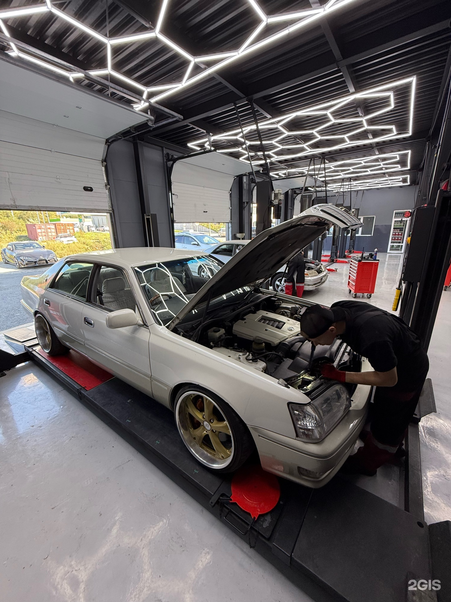

Holikorn, автосервис · Владивосток
Выбери
своё.
Услуги, цены и быстрые действия в одном месте. Открой услугу, посмотри стоимость и перейди к записи.

Актуальный каталог
Услуги и
цены.
01Диагностика ходовой части и тех. жидкостей БЕСПЛАТНОПолной осмотр ходовой части и силовых агрегатов на наличие неисправностей и течей тех. жидкостей.Уточнить↗02Замена масла ДВСПодробности и запись на главной странице900 ₽↗03Замена масло АКПП со снятием поддона (с фильтром)Подробности и запись на главной странице4000 ₽↗04Замена масла в АКПП без снятия поддона (частичная)Подробности и запись на главной странице1850 ₽↗05Замена масло в заднем мосту (редукторе)Подробности и запись на главной странице1000 ₽↗06Замена масло в переднем мосту (редукторе)Подробности и запись на главной странице1000 ₽↗07Замена масла МКПППодробности и запись на главной странице1500 ₽↗08Комплексный шиномонтаж 4-х колёс R13 (с балансировкой, грузики входят в стоимость)Подробности и запись на главной странице1790 ₽↗09Комплексный шиномонтаж 4-х колёс R14 (с балансировкой, грузики входят в стоимость)Подробности и запись на главной странице1890 ₽↗010Комплексный шиномонтаж 4-х колёс R15 (с балансировкой, грузики входят в стоимость)Подробности и запись на главной странице1990 ₽↗011Комплексный шиномонтаж 4-х колёс R16 (с балансировкой, грузики входят в стоимость)Подробности и запись на главной странице2090 ₽↗012Комплексный шиномонтаж 4-х колёс R17 (с балансировкой, грузики входят в стоимость)Подробности и запись на главной странице2690 ₽↗013Комплексный шиномонтаж 4-х колёс R18 (с балансировкой, грузики входят в стоимость)Подробности и запись на главной странице3190 ₽↗014Комплексный шиномонтаж 4-х колёс R19 (с балансировкой, грузики входят в стоимость)Подробности и запись на главной странице3890 ₽↗015Комплексный шиномонтаж 4-х колёс R20 (с балансировкой, грузики входят в стоимость)Подробности и запись на главной странице4590 ₽↗016Комплексный шиномонтаж 4-х колёс R21 (с балансировкой, грузики входят в стоимость)Подробности и запись на главной странице5250 ₽↗017Комплексный шиномонтаж 4-х колёс R22 (с балансировкой, грузики входят в стоимость)Подробности и запись на главной странице5500 ₽↗018Замена ДВСПодробности и запись на главной страницеот 23000 ₽↗019Замена АКПППодробности и запись на главной страницеот 16000 ₽↗020Замена редуктора (заднего, переднего)Подробности и запись на главной страницеот 4000 ₽↗021Замена стойкиПодробности и запись на главной странице2000 ₽↗022Замена рулевой рейкиПодробности и запись на главной страницеот 4000 ₽↗023Замена стойки стабилизатора (линк)Подробности и запись на главной странице850 ₽↗024Замена втулок стабилизатораПодробности и запись на главной страницеот 1650 ₽↗025Диагностика развал - схожденияПодробности и запись на главной странице550 ₽↗026Развал - схождениеПодробности и запись на главной страницеот 1850 ₽↗
Контакты
До встречи
в Holikorn.
3-я Поселковая улица, 7 ст1
Пн–Пт 10:00–19:00, Сб–Вс 11:00–19:00
+79025216583
Быстрые ссылки